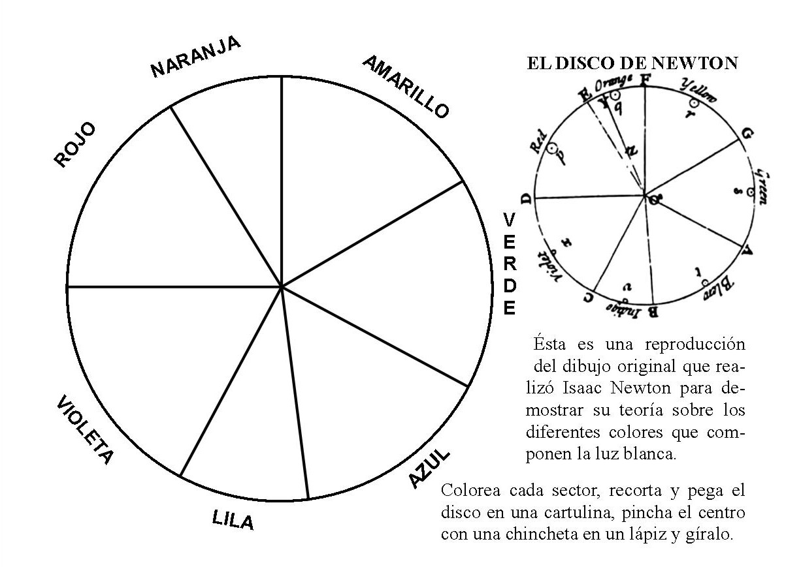

Hoy os vamos a mostrar cómo hacer el famoso disco de Newton. Se trata de un experimento de Física muy visual en el que veremos cómo al girar un disco muy rápido sus colores desaparecen y solo podemos distinguir un objeto blanco. Con este efecto casi "mágico" explicaremos, además, por qué existen los arcoiris. ¿Te atreves a descubrirlo?
Materiales:
- Una caja redonda (como las de quesitos) o un trozo de cartón o un cd
- Lapiceros de colores
- Tijeras
- Hilo o lápiz
- Una regla (opcional)
Procedimiento:
El primer paso es recortar un trozo de cartón totalmente redondo. Si disponemos de una caja de quesitos vacía será mucho más fácil, ya que solo tendremos que recortar la tapa. Si no, con cualquier lámina de cartón podemos recortar un círculo (lo más perfecto posible) con ayuda de unas tijeras y un compás.Una vez tengamos el círculo de cartón, tendremos que dividirlo en ocho "triángulos" iguales, ¡igual que con las pizzas! Lo más fácil es ayudarnos de una regla para trazar cuatro líneas que ocupen el diámetro.
A continuación, deberemos pintar cada trozo de un color, de manera que al final formemos los colores del arcoiris. Si no tenemos tantos colores podemos hacerlo con menos, pero el resultado será menos espectacular.
Una vez esté bien pintado, toca hacer dos agujeros en el centro (a unos milímetros uno del otro) con ayuda de la punta de las tijeras. Dependiendo del grosor del hilo deberemos hacerlos más grandes o más pequeños. Introducimos un extremo del hilo por uno de los agujeros y volvemos a meterlo por el otro, de forma que en los dos lados haya prácticamente la misma longitud.
¡Listo! Para comprobar el increíble efecto de nuestro "disco mágico" solamente tenemos que coger las dos puntas del hilo y comenzar a dar vueltas al círculo para que se vaya enrollando. Una vez bien enrollado, tensamos el hilo por los dos lados a la vez y... ¡el disco empezará a girar a toda velocidad! Pero lo más impactante es que, si nos fijamos en los colores, empezarán a desaparecer y tornarse de un color gris, casi blanco. ¿Cómo es posible?
Explicación:
¿Cómo puede ser que todos los colores del arcoiris se hayan convertido en un color blanquecino?Esto es porque la luz blanca que nosotros vemos todos los días (la que emana del Sol) lleva en realidad todos los colores en su interior, excepto el negro (que es la ausencia de luz).
Plantilla para descargarla:
